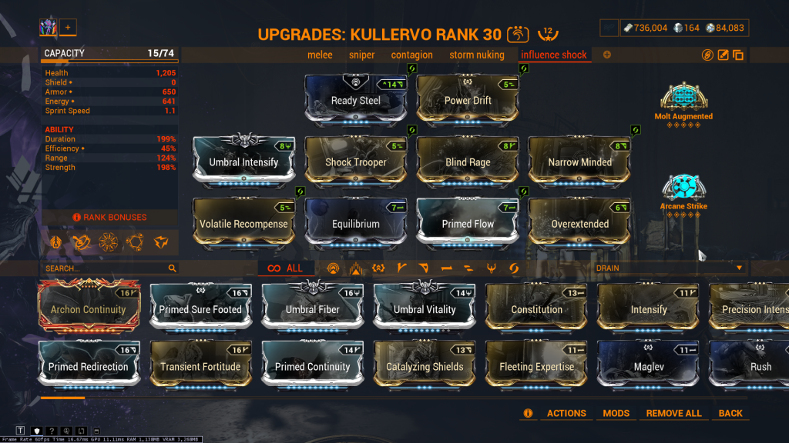

I’ve spent long enough playing Kullervo now and creating various builds that I figured it’s probably time to share that elsewhere. So, with that said, here’s an overview of his kit, 6 different builds I’ve created to take advantage of his strengths, and weapon recommendations for each build.
Passve – Kullervo boasts +75% Heavy Attack Efficiency and +100% Heavy Attack Wind Up Speed on a ll melee weapons. This mostly serves as quality of life to make the rest of his kit work better. It’s not gamechanging but you will absolutely notice it during gameplay, and it’s nice to have.
Wrathful Advance – Charge a heavy attack, teleport to the target, and attack. You gain 200% flat critical hit chance on melee weapons, applied after all other buffs. And it scales with strength, allowing all of his melee weapons to crit deep into red crit territory with a strength investment. Oh, and it has a tap/hold that allows him to teleport anywhere and not have to heavy attack a specific enemy
Recompense – This is how you stay alive. He sends out the daggers from his chest and each one generates a little overguard when hitting an enemy, or damages himself if time runs up before hitting an enemy. The brief invulnerability period on cast and the overguard gate are what allow him to survive into high levels. Recently this ability got an augment that causes the daggers to spin in a circle around him constantly generating overguard, which significantly reduces the amount of maintenance to play him at high levels
Collective Curse – Binds enemies together and deals 50% of the damage to any enemy to all others. This scales with strength, easily hitting 100% with a maxed blind rage and literally anything else. The cast does have a line of sight check, though it has a generous range, and there is no line of sight check once enemies are chained together. This combos extremely well with Wrathful Advance, allowing you to chain enemies together and deal massive damage to all of them at once
Storm of Ukko – The typical subsume slot, if you’re going to. It causes daggers to fall from the sky in a radius around you, which deal slash procs and increase your melee combo counter. The enemies hit by it will also be staggered, allowing some light cc, though it’s heavily overshadowed by his first 3 abilities in most cases. Worth using on some builds, but it’s the easiest to say goodbye to if needed.
This is my general purpose melee build. Ready steel is some nice quality of life and his abilities will overshadow the benefit of really any aura mod you can slot in there. It’s probably easily replaceable, but on builds such as heavy melee spam, it’s very nice to have. Power drift is there for a similar reason, lack of anything better to put in the slot. Molt Augmented gives an entire extra tier of crit through Wrathful Advance, and Arcane Strike could be replaced by your favorite melee arcane or an Arcane Energize if you find you have energy economy issues, which can happen if using Collective Curse generously enough.
Volatile recompense is included for quality of life as well, as it just makes survival less of a headache in higher levels where overguard’s damage reduction no longer cuts it. The rest of the build serves to have a good amount of duration for Wrathful Advance’s crit buff and a decent amount of range for grabbing enemies with Collective Curse, as well as Primed Flow to reach 500 max energy for violet archon shards. Equilibrium is included for better energy economy, and the rest of the build is devoted to squeezing out as much crit as you can from Wrathful Advance.
You may also note that this build has Tharros Strike subsumed, which is mostly there to make it easier to pop heavy enemies like acolytes. Far from mandatory, if you prefer the cc from Storm of Ukko it's plenty viable, or there are other common helminth options like nourish or roar that will serve you well as well.
This build uses 5 tauforged violet archon shards, all for the melee critical damage buff, as the best thing to pair with ridiculous amounts of crit chance is ridiculous amounts of crit damage. The following 2 builds are also best suited with the same shard setup, though the last few aren't.
Weapon Recommendations:
1. Praedos – Not gonna blow you away in playstyle, but it’s plenty strong and the speed buff is nice to have around
2. Glaive – instead of nuking an area with slash damage, nuke it with massive crit damage
3. Corufell – Kullervo has a gun
4. Hate – already a strong crit melee weapon, boosted to new heights
5. Okina – the ghost daggers will crit really hard, instantly killing enemies
6. Thalys – the exploding shards from evo 5 will now crit
7. Bo – an extremely underrated pick, and while its damage is somewhat unimpressive, the range is and Kullervo more than makes up for the damage issue
8. Magistar – big crit slams are bigger and critter
9. Syam – the projectile’s ability to travel over terrain lets it hit a lot more enemies than most other projectile melees, for faster killing
If you’re wondering why I didn’t mention exodia contagion in the previous build for recommended weapons, that’s because this build is better for specific interactions with that arcane. Eclipse applies to contagion twice, so it’s a massive damage increase. Vigorous swap and holster amp are multiplicative where they should be additive, as well as arcane arachne. All of this combines to create some absolutely silly numbers.
The build for the melee itself looks something like this. I’m honestly by no means an expert on exodia contagion, though I know that condition overload doesn’t apply to the explosion, making it largely meaningless. Exposure seemed like the best arcane to me but again I’m kinda dumb in this area. Build a zaw with whatever strike you have a riven for, or plague kripath like I used here.
Yeah you saw it coming

This is largely similar to the first build, though instead of Tharros Strike I have shock as well as shock trooper. This build is meant to add electric damage to all your melee weapons so that you can proc influence with whatever weapon you happen to have equipped. I tend not to use it because collective curse and wrathful advance are so strong together everything dies by the time influence can even affect them, but this build certainly doesn’t slouch.
Weapon recommendations are gonna be largely similar to my first batch. Notable ones or new ones include:
Thalys, which likes to proc influence with its shards
Spinnerex, which stacks a lot of toxin status
Glaives, which love to proc status in a radius
Anku Incarnon, which stacks a LOT of slash status
Tonkkatt, which stacks heat for heat inherit shenanigans that you can now apply to an entire crowd
Use your standard melee builds with influence but swap whatever electric mod you have for magnetic or anything else that appeals to you.
Here’s a neat one, a Kullervo build that doesn’t focus on his weapons. This is one I would change my shard setup for, but alas I am broke. Ideally this would probably run a casting speed shard and some red shards for strength.
The gist of this build is to use recompense to proc arcane truculence, which will proc viral on every enemy in a radius. Then you collective curse to bind them together to multiply your dps, and cast storm of ukko to deal tons of damage. The wrath of ukko augment allows you to refresh the duration for much cheaper on energy than the normal ability, allowing you to keep the cycle going without having to budget too much for energy economy.
Weapon recommendations here are entirely irrelevant, as it’s an ability nuking focused build. I don’t use this one much as I just love melee weapons in this game, but it’s certainly not weak by any stretch of the imagination.
So this build kinda just started as me wondering what I could accomplish with Kullervo if I didn’t have wrathful advance. I ended up settling on this stupid thing.
Similarly you're not gonna want 5 melee crit damage shards, as you're not using your melee. Purple shards for primary electric damage would be your best bet here.
Here you want to use collective curse to bind enemies together, use nourish to buff your sniper’s damage and also to synergize with the bizarre sharpshooter mod from arbitrations, which regenerates a decent chunk of energy on headshot kill. A good sniper build should have no trouble killing, and collective curse massively increases your kpm with this. Storm of ukko is still useful as some light cc, but it’s nowhere near the focal point of this build.
As for weapon recommendations, any sniper will work. I use snipetron vandal as I think it’s funny that it goes against canon, and I have a riven for it. The build will look something like this:
Yes, I know. Maxed arcanes, 12 forma, maxed umbrals, it’s not exactly a proper new player build. I get it. But, you can use the unranked versions of these things. And this is a good basis for a Kullervo build that can survive the difficulties of an energy economy early game while playing solo. The playstyle does have a significant change, where instead of using recompense proactively to gain invulnerability periods, you instead face tank the lower damage numbers you’re dealing with and generate energy with hunter adrenaline or rage.
No real notable weapon recommendations, and if you’re new you shouldn’t be asking for weapon recommendations on Kullervo. He’ll make any of your melees more than adequate, and you should build every weapon you can and level it for mastery.